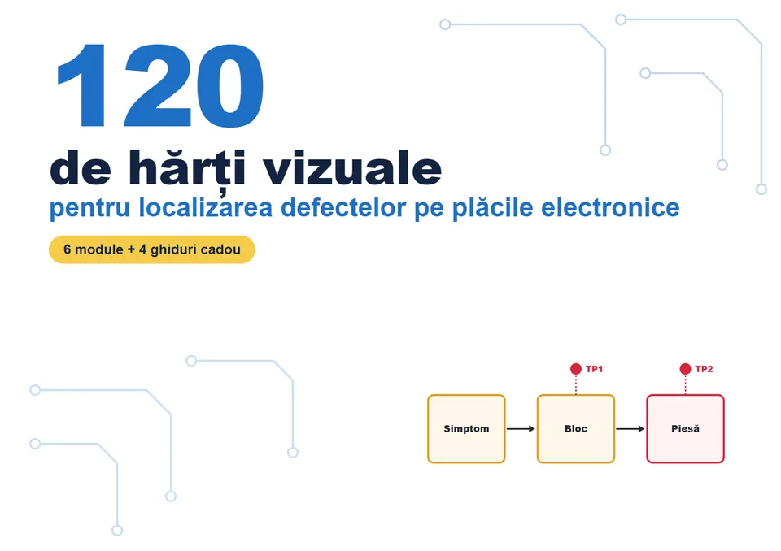
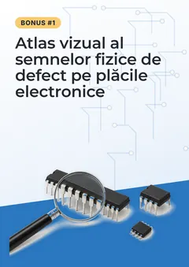
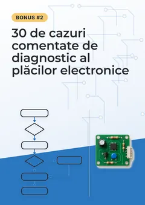
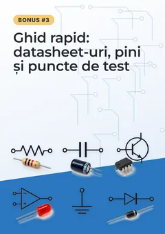
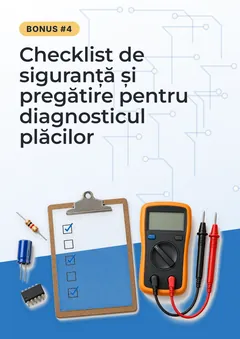

120 de hărți vizuale pentru localizarea defectelor pe plăcile electronice
Fiecare hartă e un simptom pe o singură pagină. O deschizi la banc, privești placa pe blocuri, măsori în punctele marcate și compari cu tabelul.
⬇ Descarcă PDF Deschide în browser →Cele 4 bonusuri ale tale

Atlas vizual al semnelor fizice de defect pe plăcile electronice
Multe defecte se văd înainte de a măsura. Acest atlas adună 19 semne fizice: cum le recunoști, ce piesă trădează de obicei și ce măsori ca să confirmi.

30 de cazuri comentate de diagnostic al plăcilor electronice
Fiecare pagină e o placă întreagă cu un defect real din atelier: ce făcea, ce s-a privit, ce s-a măsurat și unde era defectul. Merg de la simplu la dificil.

Ghid rapid: datasheet-uri, pini și puncte de test
Ghidul nu e pentru citit schema: e ca să știi ce tensiune aștepți pe fiecare pin și unde pui vârfurile pe placa reală.

Checklist de siguranță și pregătire pentru diagnosticul plăcilor
Înainte să deschizi o placă și înainte de fiecare pornire, parcurge pagina potrivită. Așa nu pierzi defectul inițial și nu adaugi unul nou.
De unde începi
- Descarcă cele 5 PDF-uri și salvează-le pe telefon sau pe computer.
- Dacă n-ai diagnosticat niciodată o placă, citește modulul 1 complet: acolo e metoda pe care o folosesc toate celelalte hărți.
- Dacă știi deja ce face aparatul, caută simptomul în cuprins: nu pornește (modulul 2), sursă în comutație (modulul 3), pornește dar nu funcționează (modulul 4), o ieșire care nu acționează (modulul 5) sau un defect care vine și pleacă (modulul 6).
Salvează acest link
Această pagină este accesul tău la material oricând.
Pasul următor
Ai deja metoda. Pasul următor e s-o folosești: alege o placă pe care o ai pusă deoparte, începe cu harta 1 și urmează traseul simptomului fără să sari pași.